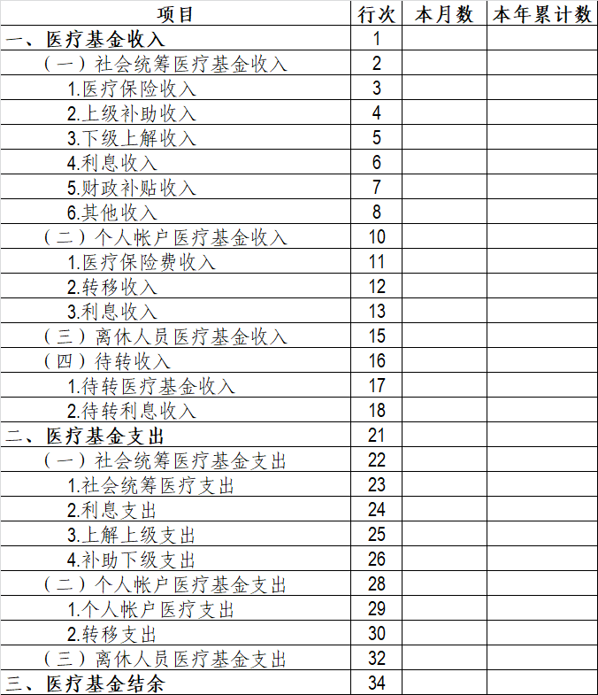
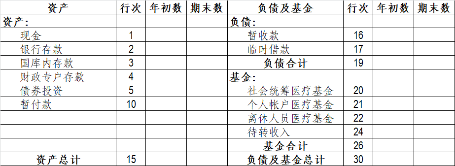

财政部
关于印发《职工医疗保险基金会计核算办法》的通知
财会字〔1997〕1号
各省、自治区、直辖市、计划单列市财政厅（局）：
为了规范和加强职工医疗保险基金的会计核算，根据国家有关法律、法规，我们制定了《职工医疗保险基金会计核算办法》，现印发给你们，请转发所属各社会医疗保险事业机构，自1997年1月1日起执行。执行中有何问题，请及时函告我部。
各地区自行制定的职工医疗保险基金会计核算办法同时废止。
附件：职工医疗保险基金会计核算办法
财政部
1997年1月2日
附件：
职工医疗保险基金会计核算办法
第一章 总则
一、为了规范职工医疗保险基金（以下简称医疗保险基金）的会计核算，特制定本办法。
二、本办法适用于中华人民共和国境内的社会医疗保险事业机构（以下简称医疗保险机构）经办的医疗保险基金。
三、医疗保险基金的会计核算应当正确划分会计期间，分期结算帐目和编制会计报表。会计期间分为年度、季度和月份。会计年度自公历1月1日起至12月31日止。年度、季度和月份的起讫日期采用公历日期。
四、医疗保险基金的会计核算应当以实际发生的各项收支业务为依据，记录和反映其收入、支出和结余情况。
五、医疗保险基金的会计核算采用收付实现制，会计记帐采用借贷记帐法。
六、医疗保险基金的会计处理方法前后期应当一致，会计指标应当口径一致、不得随意变更。如确有必要变更，应当将变更的情况、变更的原因以及对收支情况的影响，在财务会计报告书中说明。
七、医疗保险机构经办的医疗保险基金应按本办法的规定设置和使用会计科目，进行会计核算。在不影响会计核算要求和会计报表指标汇总，以及对外提供统一会计报表的情况下，可以根据实际情况对本办法作必要的补充，并报财政部备案。
医疗保险机构在填制医疗保险基金会计凭证、登记帐簿时，应填制会计科目的名称，或同时填列会计科目的名称和编号；不应只填列会计科目编号，不填列会计科目名称。
八、医疗保险机构编制的医疗保险基金会计报表，必须做到数字真实、内容完整、说明清楚、手续齐备、编报及时；并应按月、按季或按年报送当地财政部门、主管部门和职工医疗保险基金监督组织。
月份会计报表应于月份终了后5日内报出；季度会计报表应于季度终了后10日内报出，年度会计报表应于年度终了后15日内报出。
会计报表的填列以人民币“元”为金额单位，“元”以下填至“分”。
向外报出的会计报表应依次编定页数，加具封面，装订成册，加盖公章。封面应注明：医疗保险机构名称、地址、成立年份、报表所属年度、季度、月份、送出日期等，并由医疗保险机构领导和会计主管人员签名或盖章。
九、本办法由中华人民共和国财政部负责解释，需要变更时，由财政部修订。
第二章 会计科目
一、会计科目表
二、会计科目使用说明
第101号科目 现金
一、本科目核算医疗保险基金的库存现金。
二、收到医疗保险基金的现金，借记本科目，贷记有关科目；支付医疗保险基金的现金，借记有关科目，贷记本科目。
三、医疗保险基金应设置“现金日记帐”，由出纳人员根据收付款凭证，按照业务的发生顺序逐笔登记。每日终了，应计算当日的现金收入合计数、现金支出合计数和结余数，并将结余数与实际库存数核对，做到帐款相符。
第102号科目 银行存款
一、本科目核算医疗保险基金的银行存款。
二、本科目应设置医疗保险基金“收入户”和“支出户”两个明细科目。
1.医疗保险基金“收入户”除缴付国库内医疗保险基金专户外，一般只收不支，其核算内容如下：
由医疗保险机构代收的城镇个体劳动者和个别单位缴纳的小额零星医疗保险费，借记本科目，贷记“社会统筹医疗基金收入”、“个人帐户医疗基金收入”、“离休人员医疗基金收入”、“待转收入——待转医疗基金收入”科目；由医疗保险机构汇总缴入国库的医疗保险费，借记“国库内存款”科目，贷记本科目。
收到上级补助收入、下级上解收入、财政补贴收入以及其他收入，借记本科目，贷记“社会统筹医疗基金收入”科目；由医疗保险机构缴入国库的上级补助收入、下级上解收入、财政补贴收入以及其他收入，借记“国库内存款”科目，贷记本科目。
收到银行转来的医疗保险基金“收入户”的计息通知，借记本科目，贷记“待转收入——待转利息收入”科目；将医疗保险基金“收入户”的利息收入缴入国库时，借记“国库内存款”科目，贷记本科目。
2.医疗保险基金“支出户”除接受医疗保险基金财政专户转入的医疗保险基金外，一般只支不收，其核算内容如下：
财政部门根据医疗保险基金预算和收支进度及医疗保险机构的拨款申请，按期从医疗保险基金财政专户拨付款项到医疗保险基金支出户。医疗保险机构收到拨付通知时，借记本科目，贷记“财政专户存款”科目。
收到银行转来的医疗保险基金“支出户”的计算通知，借记本科目，贷记“待转收入——待转利息收入”科目。
支付医疗保险基金及有关款项，借记有关科目，贷记本科目。
三、本科目应按医疗保险基金“收入户”和“支出户”设置明细帐，在明细帐下按开户银行分别设置“银行存款日记帐”，由出纳人员根据收付款凭证，按照业务的发生顺序逐笔登记，每日终了应结出余额。“银行存款日记帐”应定期与“银行对帐单”核对，至少每月核对一次。月份终了，医疗保险基金存款帐面结余与银行对帐单余额之间如有差额，必须逐笔查明原因进行处理，并应按月编制“银行存款余额调节表”，调节相符。
第103号科目 国库内存款
一、本科目核算医疗保险基金在国库内的专户存款。
二、用人单位缴纳的医疗保险费用和个人单位代扣代缴的职工个人应缴纳的医疗保险费，由医疗保险机构根据核定的“职工医疗保险基金申报表”，填开“一般缴款书”（或“职工医疗保险基金专用缴款书”），直接上缴国库。医疗保险机构根据国库转来的“一般缴款书”（或“职工医疗保险基金专用缴款书”）凭证，借记本科目，贷记“社会统筹医疗基金收入”、“个人帐户医疗基金收入”、“离休人员医疗基金收入”、“待转收入——待转医疗基金收入”科目。
由医疗保险机构代收的城镇个体劳动者和个别单位缴纳的小额零星医疗保险费，按期填开汇总缴款书，缴入国库。由医疗保险机构汇总缴入国库的医疗保险费，借记本科目，贷记“银行存款——收入户”科目。
由医疗保险机构缴入国库的上级补助收入、下级上解收入、财政补贴收入以及其他收入，借记本科目，贷记“银行存款——收入户”科目。
将医疗保险基金“收入户”和利息收入缴入国库时，借记本科目，贷记“银行存款——收入户”科目。
缴入国库的医疗保险基金，由医疗保险机构根据医疗保险基金预算和收入缴库情况，按月（或季）向同级财政部门提出申请，经财政部门审核后，从国库内医疗保险基金专户拨至医疗保险基金财政专户。医疗保险机构根据医疗保险基金转拨凭证，借记“财政专户存款”科目，贷记本科目。
三、本科目期末借方余额反映国库内医疗保险基金专户存款余额。
第104号科目 财政专户存款
一、本科目核算医疗保险基金财政专户存款。
二、财政部门将国库内医疗保险基金专户存款拨到医疗保险基金财政专户时，医疗保险机构根据医疗保险基金转拨凭证，借记本科目，贷记“国库内存款”科目。
财政部门根据医疗保险基金预算和收支进度及医疗保险机构的拨款申请，按期从医疗保险基金财政专户存款拨付到医疗保险基金支出户时，借记“银行存款——支出户”科目，贷记本科目。
按规定用医疗保险基金购买国家债券，按实际支付的价款，借记“债券投资”科目，贷记本科目。
国家债券到期收回本息或按规定转让时，按本息合计，借记本科目，按债券本金部分，贷记“债券投资”科目，按债券利息部分，贷记“待转收入——待转利息收入”科目。
收到银行转来的医疗保险基金财政专户存款计息通知，借记本科目，贷记“待转收入——待转利息收入”科目。
三、本科目期末借方余额反映医疗保险基金财政专户存款余额。
第121号科目 债券投资
一、本科目核算按规定用医疗保险基金购买国家债券的本金。
二、医疗保险机构按规定用医疗保险基金购买国家债券，按实际支付的价款，借记本科目，贷记“财政专户存款”科目。
国家债券到期收回本息或按规定转让时，按本息合计，借记“财政专户存款”科目，按债券本金部分，贷记本科目，按债券利息部分，贷记“待转收入——待转利息收入”科目。
三、本科目应按国家债券的种类设置明细帐，进行明细核算。
第131号科目 暂付款
一、本科目核算医疗保险机构对定点医疗机构实行预付制以及委托用人单位管理部分医疗保险费办法的，对定点医疗机构以及用人单位的预付款。
二、医疗保险机构根据职工医疗保险合同，将所需款项拨至医疗机构以及用人单位进，借记本科目，贷记“银行存款——支出户”科目。
医疗保险机构根据医疗保险享受人员的医疗费支出数额以及用人单位医疗保险费报销数额，借记“社会统筹医疗基金支出”、“个人帐户医疗基金支出”、“离休人员医疗基金支出”科目，贷记本科目。
三、本科目应按定点医疗机构以及用人单位名称设置明细帐，进行明细核算。
第201号科目 暂收款
一、本科目核算医疗保险基金收支过程中形成的暂收款项。
二、收到款项时，借记“银行存款——支出户”、“现金”等科目，贷记本科目。支付款项时，借记本科目，贷记“银行存款——支出户”、“现金”等科目。
三、本科目应按暂收款的种类和对方单位设置明细帐，进行明细核算。
第211号科目 临时借款
一、本科目核算为解决医疗保险基金周转困难，临时向金融机构借入的款项。
二、借入款项时，借记“银行存款——支出户”科目，贷记本科目；归还借款时，借记本科目，贷记“银行存款——支出户”科目。
三、本科目贷方余额为尚未归还的临时借款。
四、本科目应按金融机构设置明细帐，进行明细核算。
第301号科目 社会统筹医疗基金
一、本科目核算社会统筹医疗保险基金全部收入扣除全部支出后滚存结余。
二、期末，将“社会统筹医疗基金收入”科目贷方余额转入本科目，借记“社会统筹医疗基金收入”科目，贷记本科目，将“社会统筹医疗基金支出”科目借方余额转入本科目，借记本科目，贷记“社会统筹医疗基金支出”科目。
三、本科目期末余额为历年积存的个人帐户医疗保险基金结余。
四、本科目应按用人单位设置明细帐，在明细帐下按职工个人设置帐面进行明细核算。
第303号科目 离休人员医疗基金
一、本科目核算离休人员和老红军医疗保险基金全部收入扣除全部支出后的滚存结余。
期末，将“离休人员医疗基金收入”科目贷方余额转入本科目，借记“离休人员医疗基金收入”科目，贷记本科目；将“离休人员医疗基金支出”科目借方余额转入本科目，借记本科目，贷记“离休人员医疗基金支出”科目。
三、本科目期末余额为历年积存的离休人员和老红军医疗保险基金的结余。
四、本科目应按用人单位设置明细帐，进行明细核算。
第401号科目 社会统筹医疗基金收入
一、本科目核算按规定记入社会统筹医疗基金帐户的各项收入，包括：
（一）医疗保险费收入，指医疗保险机构向用人单位收缴的、按规定比例记入社会统筹医疗基金帐户的医疗保险费部分。
（二）上级补助收入，指上级医疗保险机构拨入的医疗保险基金收入。
（三）下级上解收入，指下级医疗保险机构上缴的医疗保险基金收入。
（四）利息收入，指按规定记入社会统筹医疗基金帐户的利息收入。
（五）财政补贴收入，指按规定由同级财政部门给予医疗保险基金的补贴。
（六）其他收入，指滞纳金及财政部门核准的其他收入。滞纳金是指因用人单位拖欠缴纳医疗保险费而近规定收取的费用。
二、医疗保险机构根据国库转来的“一般缴款书”（或“职工医疗保险基金专用缴款书”）凭证，将其中按规定比例记入社会统筹医疗基金帐户的医疗保险费记入本科目，借记“国库内存款”科目，贷记本科目。
由医疗保险机构代收的城镇个体劳动者和个别单位缴纳的小额零星医疗保险费，将其中按规定比例记入社会统筹医疗基金帐户的医疗保险费记入本科目，借记“银行存款——收入户”科目，贷记本科目。
对于已分清归属于社会统筹医疗基金帐户的待转医疗基金收入，自“待转收入——待转医疗基金收入”科目转入本科目，借记“待转收入——待转医疗基金收入”科目，贷记本科目。
对于按规定记入社会统筹医疗基金帐户的利息收入，借记“待转收入——待转利息收入”科目，贷记本科目。
收到上级补助收入、下级上解收入、财政补贴收入以及其他收入，借记“银行存款——收入户”科目，贷记本科目。
三、期末，应将本科目贷方余额全部转入“社会统筹医疗基金”科目，借记本科目，贷记“社会统筹医疗基金”科目。结转后，本科目应无余额。
四、本科目应按收入的类别（如医疗保险费收入、上级补助收入、下级上解收入、利息收入、财政补贴收入、其他收入等）设置明细帐，进行明细核算。
第402号科目 个人帐户医疗基金收入
一、本科目核算按规定记入个人医疗保险基金帐户的各项收入，包括：
（一）医疗保险费收入，指用人单位按规定为职工缴纳的医疗保险费部分和职工个人缴纳的医疗保险费。
（二）转移收入，指职工调入本地区，其个人医疗保险基金随同转入的收入。
（三）利息收入，指按规定记入个人帐户的利息收入。
二、医疗保险机构根据国库转来的“一般缴款书”（或“职工医疗保险基金专用缴款书”）凭证，将其中按规定应记入个人帐户的医疗保险费记入本科目，借记“国库内存款”科目，贷记本科目。
由医疗保险机构代收的城镇个体劳动者和个别单位缴纳的小额零星医疗保险费，将其中按规定应记入个人帐户的医疗保险费记入本科目，借记“银行存款——收入户”科目，贷记本科目。
随异地职工调入本地而由异地医疗保险机构转入的收入（含本金和利息），借记“银行存款——收入户”科目，贷记本科目。
按规定记入个人医疗保险基金帐户的利息收入。由“待转收入——待转利息收入”科目转入本科目，借记“待转收入——待转利息收入”科目，贷记本科目。
三、期末，应将本科目贷方余额全部转入“个人帐户医疗基金”科目，借记本科目，贷记“个人帐户医疗基金”科目。结转后，本科目应无余额。
四、本科目应按用人单位设置明细帐，在明细帐下按职工个人设置帐面进行明细核算。
第403号科目 离休人员医疗基金收入
一、本科目核算纳入职工医疗保障制度改革范围的离休人员和老红军医疗保险基金收入。
二、医疗保险机构根据国库转来的“一般缴款书”（或“职工上缴医疗保险基金专用缴款书”）凭证，将其中按规定从医疗保险基金收入中划出的离休人员和老红军医疗保险基金收入部分记入本科目，借记“国库内存款”科目，贷记本科目。
由医疗保险机构代收的城镇个体劳动者和个别单位缴纳的小额零星医疗保险费，将其中按规定从医疗保险基金收入中划出的部分记入本科目，借记“银行存款——收入户”科目，贷记本科目。
三、期末，应将本科目贷方余额全部转入“离休人员医疗基金”科目，借记本科目，贷记“离休人员医疗基金”科目。结转后，本科目应无余额。
四、本科目应按用人单位设置明细帐，进行明细核算。
第407号科目 待转收入
一、本科目核算待转医疗基金收入和待转利息收入。
二、本科目应设置“待转医疗基金收入”和“待转利息收入”两个明细科目。
1.“待转医疗基金收入”明细科目核算用人单位和个人缴纳的尚未分清应记入社会统筹、个人帐户的医疗保险基金收入，其核算内容如下：
医疗保险机构根据国库转来的“一般缴款书”（或“职工医疗保险基金专用缴款书”）凭证，将其中尚未分清应计入社会统筹、个人帐户的医疗保险基金收入暂记入本科目，借记“国库内存款”科目，贷记本科目。
由医疗保险机构代收的城镇个体劳动和个别单位缴纳的小额零星医疗保险费，将其中尚未分清应计入社会统筹、个人帐户的医疗保险基金收入暂记入本科目，借记“银行存款——收入户”科目，贷记本科目。
已分清归属于社会统筹、个人帐户的待转医疗基金收入，自本科目转入“社会统筹医疗基金收入”、“个人帐户医疗基金收入”科目，借记本科目，贷记“社会统筹医疗基金收入”、“个人帐户医疗基金收入”科目。
2.“待转利息收入”明细科目核算已经收到但尚未记入社会统筹和个人帐户的利息收入，其核算内容如下：
收到银行转来的医疗保险基金财政专户的计算通知，借记“财政专户存款”科目，按债券本金部分，贷记“国家债券”科目，按利息部分，贷记本科目。
按规定应记入个人帐户的利息，自本科目转入“个人帐户医疗基金收入”科目，贷记本科目，贷记“个人帐户医疗基金收入”科目；取得的各项利息收入扣除应计入个人帐户的利息，剩余部分自本科目全部转入“社会统筹医疗基金收入”科目，借记本科目，贷记“社会统筹医疗基金收入”科目（如为借余额作相反分录）。
三、本科目期末余额为尚未分清的待转医疗基金收入和尚未分配的待转利息收入。
第411号科目 社会统筹医疗基金支出
一、本科目核算应由社会统筹医疗基金开支的各项支出，包括：
（一）社会统筹医疗费支出，指按规定应由社会统筹医疗基金开支的医疗费支出。
（二）利息支出，指临时借款的利息支出。
（三）上解上级支出，指上解上级医疗保险机构的医疗保险基金支出。
（四）补助下级支出。指拨付下级医疗保险机构的医疗保险基金支出。
二、按规定实际支付应由社会统筹医疗基金开支的医疗费支出，借记本科目，贷记“银行存款——支出户”科目。
对定点医疗机构实行预付制和委托用人单位管理部分医疗保险费办法的，医疗保险机构根据经审核的医疗保险享受人员的医疗费支出数额以及用人单位医疗保险费报销数额，应由社会统筹医疗基金开支的部分，借记本科目，贷记“暂付款”科目。
采用其他结算方式支付的医疗保险费，根据经审核的医疗费报销凭证，借记本科目，贷记“现金”、“银行存款——支出户”等科目。
支付临时借款的利息，借记本科目，贷记“银行存款——支出户”科目。
上解上级医疗保险机构的医疗保险基金支出，借记本科目，贷记“银行存款——支出户”科目。
拨付下级医疗保险机构的医疗保险基金支出，借记本科目，贷记“银行存款——支出户”科目。
三、期末，应将本科目借方余额全部转入“社会统筹医疗基金”科目，借记“社会统筹医疗基金”科目，贷记本科目。结转后，本科目应无余额。
四、本科目应按支出种类（如社会统筹医疗费支出、利息支出、上解上级支出、补助下级支出等）设置明细帐，进行明细核算。
第412号科目 个人帐户医疗基金支出
一、本科目核算按规定应由个人帐户医疗基金开支的各项支出，包括：
（一）个人帐户医疗费支出，指按规定应由个人帐户支付的职工个人医疗保险费支出。
（二）转移支出，指职工调离本地区，人帐户医疗基金随同转出的支出。
二、医疗保险机构对定点医疗机构实行预付制或委托用人单位管理部分医疗保险费办法的，医疗保险机构根据经审核的医疗保险享受人员的医疗费支出数额以及用人单位医疗保险费报销数额，应由个人帐户负担的部分，借记本科目，贷记“暂付款”科目。
采用其他结算方式支付个人医疗保险费的，根据经审核的医疗费报销凭证，借记本科目，贷记“现金”、“银行存款——支出户”等科目。
支付职工调离本地区、个人帐户医疗基金随同转出的支出，借记本科目，贷记“银行存款——支出户”科目。
三、期末，应将本科目借方余额全部转入“个人帐户医疗基金”科目，借记“个人帐户医疗基金”科目，贷记本科目。结转后，本科目应无余额。
四、本科目应按用人单位名称设置明细帐，在明细帐下按职工个人设置帐面进行明细核算。
第413号科目 离休人员医疗基金支出
一、本科目核算按规定应由离休人员和老红军医疗基金开支的医疗费支出。
离休人员和老红军医疗保险基金超支，由原资金>道解决，不在本科目核算。
二、医疗保险机构按规定支付应由离休人员和老红军医疗基金开支的医疗费支出，借记本科目，贷记“现金”、“银行存款——支出户”等科目。
医疗保险机构对医疗机构实行预付制或委托用人单位管理部分医疗保险费办法的，医疗保险机构根据经审核的医疗保险享受人员的医疗费支出数额以及用人单位医疗保险费报销数额，应由离休人员和老红军医疗基金开支的部分，借记本科目，贷记“暂付款”科目。
三、期末、应将本科目借方余额全部转入“离休人员医疗基金”科目，借记“离休人员医疗基金”科目，贷记本科目。结转后，本科目应无余额。
四、本科目应按用人单位名称设置明细帐，进行明细核算。
第三章 会计报表
一、会计报表种类和格式
职工医疗保险基金收支表
| 编制单位： | ＿＿＿＿年＿＿月＿＿日 | 会医险01表
单位：元 |
|

|
补充资料：
1.用人单位缴纳的医疗保险费＿＿元；
2.职工个人缴纳的医疗保险费＿＿元；
3.利息收入＿＿元。
|
资产负债表
| 编制单位： | ＿＿＿＿年＿＿月＿＿日 | 会医险02表
单位：元 |
|

|
二、会计报表编制说明
医疗保险基金收支表
（一）本表反映医疗保险基金在月份、季度、年度内的收入、支出和结余情况。
(二)本表“本月数”栏反映各项目的本月实际发生数，在编报年度会计报表时，将“本月数”栏改成“上年累计数”栏，填列上年全年累计实际发生数。
本表“本年累计数”栏反映各项目自年初起至本月末止的累计实际发生数。
（三）本表“本月数”栏各项目的内容及填列方法：
1.“社会统筹医疗基金收入”项目，反映医疗保险机构已征集的按规定记入社会统筹医疗基金帐户的收入总额。本项目应根据“社会统筹医疗基金收入”科目贷方发生额填列。
2.“医疗保险费收入”项目，反映用人单位缴纳的医疗保险费中按规定记入社会统筹医疗基金的部分。本项目应根据“社会统筹医疗基金收入”科目所属“医疗保险费收入”明细科目的贷方发生额填列。
3.“上级补助收入”项目，反映上级医疗保险机构拨入的医疗保险基金收入。本项目应根据“社会统筹医疗基金收入”科目所属“上级补助收入”明细科目贷方发生额填列。
4.“利息收入”项目，反映按规定记入社会统筹医疗基金帐户的利息收入。本项目应根据“社会统筹医疗基金收入”科目所属“利息收入”明细科目贷方发生额填列（如为借方发生额以“-”号反映）。
5.“财政补贴收入”项目，反映同级财政部门给予医疗保险基金的补贴。本项目应根据“社会统筹医疗基金收入”科目所属“财政补贴收入”明细科目贷方发生额填列。
6.“其他收入”项目，反映滞纳金及财政部门核准的其他收入。本项目应根据“社会统筹医疗基金收入”科目所属“其他收入”明细科目贷方发生额填列。
7.“个人帐户医疗基金收入”项目，反映医疗保险机构已征集的按规定记入个人帐户的医疗保险基金收入总额。本项目应根据“个人帐户医疗基金收入”科目贷方发生额填列。
8.“医疗保险费收入”项目，反映用人单位按规定为职工缴纳的医疗保险费部分和职工个人缴纳的医疗保险费。本项目应根据“个人帐户医疗基金收入”科目所属“医疗保险费收入”明细科目贷方发生额填列。
9.“转移收入”项目，反映职工调入本地区，其个人医疗保险基金随同转入的收入。本项目应根据“个人帐户医疗基金收入”科目所属“转移收入”明细科目贷方发生额填列。
10.“利息收入”项目，反映按规定记入个人医疗保险基金帐户的利息收入。本项目应根据“个人帐户医疗基金收入”科目所属“利息收入”明细科目的贷方发生额填列。
11.“离休人员医疗基金收入”项目，反映医疗保险机构已征集的按规定记入离休人员和老红军医疗基金的收入总额。本项目应根据“离休人员医疗基金收入”科目贷方发生额填列。
12.“待转收入”项目，反映待转医疗基金收入和待转利息收入。本项目应根据“待转收入”科目贷方余额填列。
13.“待转医疗基金收入”项目，反映用人单位和个人缴纳的尚未分清应计入社会统筹、个人帐户、离休人员和老红军的医疗保险基金收入。本项目应根据“待转收入”科目所属“待转医疗基金收入”明细科目贷方余额填列。
14.“待转利息收入”项目，反映已经收到但尚未计入社会统筹和个人帐户的医疗保险基金利息收入。本项目应根据“待转收入”科目所属“待转利息收入”明细科目的贷方余额填列。
15.“社会统筹医疗基金支出”项目，反映应由社会统筹医疗基金开支的各项支出总额，本项目应根据“社会统筹医疗基金支出”科目借方发生额填列。
16.“社会统筹医疗费支出”项目，反映按规定应由社会统筹医疗基金报销的医疗费支出。本项目应根据“社会统筹医疗基金支出”科目所属“社会统筹医疗费支出”明细科目的借方发生额填列。
17.“利息支出”项目，反映临时借款的利息支出。本项目应根据“社会统筹医疗基金支出”科目所属“利息支出”明细科目借方发生额填列。
18.“上解上级支出”项目，反映上交上级医疗保险机构的医疗保险基金支出。本项目应根据“社会统筹医疗基金支出”科目所属“上解上级支出”明细科目借方发生额填列。
19.“补助下级支出”项目，反映拨付下级医疗保险机构的职工医疗保险基金支出。本项目应根据“社会统筹医疗基金支出”科目所属“补助下级支出”明细科目借方发生额填列。
20.“个人帐户医疗基金支出”项目，反映按规定应由个人帐户医疗基金开支的各项支出总额。本项目应根据“个人帐户医疗基金支出”科目借方发生额填列。
21.“个人帐户医疗费支出”项目，反映按规定应由个人帐户支付的职工个人医疗保险费支出，本项目应根据“个人帐户医疗基金支出”科目所属“个人帐户医疗费支出”明细科目的借方发生额填列。
22.“转移支出”项目，反映职工调离本地区，个人帐户医疗基金随同转出的支出。本项目应根据“个人帐户医疗基金支出”科目所属“个人帐户医疗费支出”明细科目借方发生额填列。
23.“离休人员医疗基金支出”项目，反映按规定应由离休人员和老红军医疗基金开支的各项支出总额，本项目应根据“离休人员医疗基金支出”科目借方发生额填列。
本表补充资料的填列方法：
1.“用人单位缴纳的医疗保险费”项目，反映用人单位按规定比例缴纳的医疗保险费。本项目应根据“社会统筹医疗基金收入”、“个人帐户医疗基金收入”科目所属“医疗保险费收入”明细科目的贷方发生额分析计算填列。
2.“职工个人缴纳的医疗保险费”项目，反映职工个人近规定比例缴纳的医疗保险费。本项目应根据“个人帐户医疗基金收入”科目所属“医疗保险费收入”明细科目贷方发生额分析计算填列。
3.“利息收入”项目，反映医疗保险基金“收入户”、“支出户”、“财政专户存款”的利息收入和用医疗保险基金购买国家债券取得和利息收入。本项目应根据“待转收入”科目所属“待转利息收入”科目贷方发生额填列。
资产负债表
一、本表反映月末、季末、年末全部资产、负债和基金的情况。
(二)本表“年初数”栏各项数字，应根据上年末本表“期末数”栏所列数字填列。如果本年度资产负债表规定的各个项目名称和内容与上年度不相一致，应对上年年末资产负债表各项目的名称和数字按照本年度的规定进行调整，填入本表“年初数”栏内。
（三）本表各项目的内容和填列方法：
1.“现金”项目，反映期末库存现金余额。本项目应根据“现金”科目期末余额填列。
2.“银行存款”项目，反映期末银行存余额。本项目应根据“银行存款”科目期末余额填列。
3.“国库内存款”项目反映期末国库内医疗保险基金专户存款余额。本项目应根据“国库内存款”科目期末余额填列。
4.“财政专户存款”项目，反映期末医疗保险基金财政专户存款余额。本项目应根据“财政专户存款”科目期末余额填列。
5.“债券投资”项目，反映按规定用医疗保险基金购买国家债券的期末余额。本项目应根据“债券投资”科目期末余额填列。
6.“暂付款”项目，反映对定点医疗机构以及用人单位的暂付款期末余额。本项目应根据“暂付款”科目期末余额填列。
7.“暂收款”项目，反映暂收的各种款项期末数。本项目应根据“暂收款”科目期末余额填列。
8.“临时借款”项目，反映期末尚未归还的临时借款期末余额。本项目应根据“临时借款”科目期末余额填列。
9.“社会统筹医疗基金”项目，反映截止本期末止历年积存的社会统筹医疗基金结余。本项目应根据“社会统筹医疗基金”科目期末余额填列。
10.“个人帐户医疗基金”项目，反映截止本期末止历年积存的个人帐户医疗保险基金结余。本项目应根据“个人帐户医疗基金”科目期末余额填列。
11.“离休人员医疗保险基金”项目，反映截止本期末止历年积存的离休人员医疗保险基金结余。本项目应根据“离休人员医疗基金”科目期末余额填列。
12.“待转收入”科目，反映待转医疗基金和待转利息收入的期末余额。本项目应根据“待转收入”科目期末余额填列。